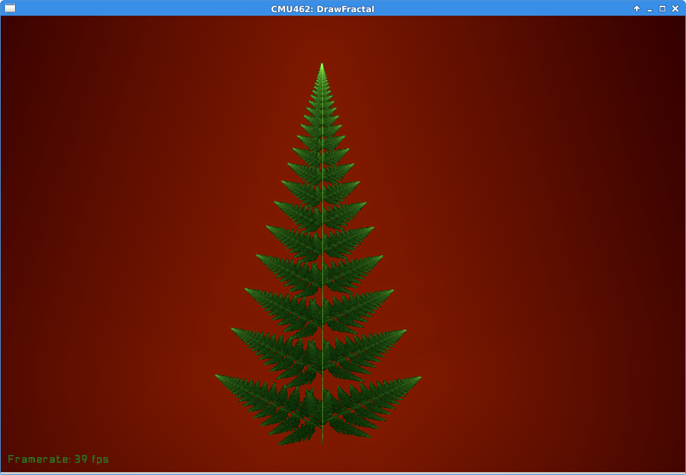

15-462 Assignment 5 Report
Mitchell Plamann (mplamann@andrew.cmu.edu)
1 Project Description
In this project, I wrote a fractal renderer that draws iterated function systems using the chaos game algorithm.
2 Build Instructions
From the project directory, run
mkdir build cd build cmake ../src/ make
Then, from the project directory, you can run the program with
./build/drawfractal fractals/sierpinski.json
3 External Libraries
I store fractal descriptions as JSON files. To parse these, I use the rapidjson library.
4 Results
First, I implemented enough code to draw a Sierpinski triangle:
The data file that generated this fractal is
{ "transforms": [
{"matrix": [[0.5, 0],
[0, 0.5]],
"offset": [0,0]},
{"matrix": [[0.5, 0],
[0, 0.5]],
"offset": [0.5,0]},
{"matrix": [[0.5, 0],
[0, 0.5]],
"offset": [0,0.5]}
],
"scale": 500,
"offset": [50, 50]
}
The entire fractal is represented as a JSON object. The "transforms" attribute describes a set of affine transforms that we apply during the chaos game. The "scale" and "offset" attributes describe the transformation that is applied to the points to make it fit the viewing window.
To draw a Barnsley Fern, the affine transformations used in the IFS had to be weighted differently. I added a "probability" parameter to the transform datatype, and was able to draw
{ "transforms": [
{"matrix": [[0, 0],
[0, 0.16]],
"probability": 0.01},
{"matrix": [[0.85, 0.04],
[-0.04, 0.85]],
"offset": [0, 1.6],
"probability": 0.85},
{"matrix": [[0.2, -0.26],
[0.23, 0.22]],
"offset": [0, 1.6],
"probability": 0.07},
{"matrix": [[-0.15, 0.28],
[0.26, 0.24]],
"offset": [0, 0.44],
"probability": 0.07}
]
}
Both of these examples show the use of irradiance caching and distance functions as described in the assignment 5 writeup.
Then I added colors to the fractal renderer. To do this, I made use of the spline object from assignment 4. I define a spline for the colors seen in the fractal. As drawfractal.cpp is drawing the fractal, the densest points on the fractal are colored the value at 1.0 on the spline. The least dense points on the fractal are colored the value at 0 on the spline. The points in-between are mapped by the sqrt function, since that seemed to give the best-looking results.
With this, I was able to generate a colored fern image:
with the following data file:
{ "transforms": [
{"matrix": [[0, 0],
[0, 0.16]],
"probability": 0.01},
{"matrix": [[0.85, 0.04],
[-0.04, 0.85]],
"offset": [0, 1.6],
"probability": 0.85},
{"matrix": [[0.2, -0.26],
[0.23, 0.22]],
"offset": [0, 1.6],
"probability": 0.07},
{"matrix": [[-0.15, 0.28],
[0.26, 0.24]],
"offset": [0, 0.44],
"probability": 0.07}
],
"scale": -50,
"offset": [450, 600],
"color_map": [
{"value": 0, "color": [0,0.1,0]},
{"value": 1, "color": [0.8,1,0.6]}
],
"background_map": [
{"value": 0, "color": [0.2,0,0]},
{"value": 1, "color": [0,0.1,0.5]}
]
}
Finally, I implemented a few of the variations described in the Fractal Flame Paper. These map the points in some non-affine way, which can lead to more interesting images. My favorite example of this the sierpinski triangle put through a spherical map taking \((x,y) \mapsto \frac{1}{x^2+y^2}(x,y)\)
{ "transforms": [
{"matrix": [[0.5, 0],
[0, 0.5]],
"offset": [0,0]},
{"matrix": [[0.5, 0],
[0, 0.5]],
"offset": [0.5,0]},
{"matrix": [[0.5, 0],
[0, 0.5]],
"offset": [0,0.5]}
],
"scale": 500,
"offset": [0, 0],
"variant": 2,
"color_map": [
{"value": 0, "color": [0,0,0]},
{"value": 0.5, "color": [0.5, 0.4, 0.3]},
{"value": 1, "color": [0.3,0.9,0.7]}
],
"background_map": [
{"value": 0, "color": [0.2,0,0.05]},
{"value": 0.7, "color": [0.6, 0.2, 0.3]},
{"value": 1, "color": [0.5, 0.1, 0.1]}
]
}
5 Limitations / Future Work
I had attempted to use the coloring algorithm described in the fractal flame paper, where each part of the fractal is colored based on the specific affine function that generated that part. This resulted in very ugly images colored seemingly at random. I switched to the current spline-based coloring strategy, which gave better-looking results, but I would give the fractal flame coloring algorithm another attempt if I had more time.
I had also wanted to animate the fractals my program produces. This was difficult to do for a few reasons. First of all, it was not clear to me which parameters to modify over time to generate good-looking animations. Also, my rendering algorithm is too slow to generate animation in real time. I suspect that I could parallelize the chaos game part of the algorithm, and perhaps render the background differently to make the algorithm fast enough for real-time animation.
6 Gallery
All of these files can be found in the fractals/ subdirectory of my project folder. Some of them were based on IFS descriptions found at http://ecademy.agnesscott.edu/~lriddle/ifs/ifs.htm
6.1 carpet.json
6.2 christmas-tree.json

6.3 dragon.json
6.4 dragon-variant.json
6.5 fern.json
6.6 icicle.json
6.7 levy.json
6.8 mcworter.json
6.9 sierpinski.json
6.10 snowflake.json
This one is not exactly the Koch Snowflake, but I thought it looked pretty cool.
6.11 spherepinski.json
This image surprised me – the light area in the center seems to outline the shape of the Koch Snowflake, but this image was generated from the sierpinski triangle equations with a spherical variation applied to it. I'm not sure why that appears here.
6.12 comet.json